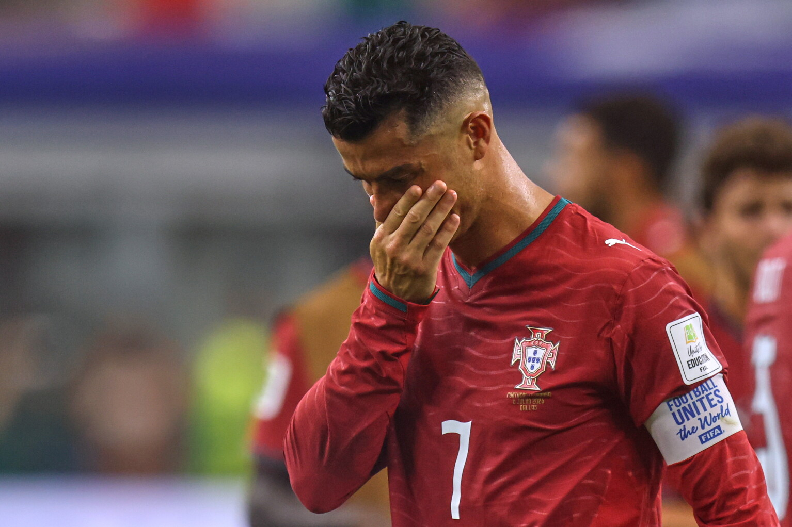
[HEADLINE] Six World Cups, Zero Trophies — Spain's Stoppage Winner, 41-Year-Old CR7's Tearful Last Dance
In the early hours of 7 July 2026 Beijing time, in the round of 16 at the US-Canada-Mexico World Cup, Portugal were knocked out 0-1 by a Spanish stoppage-time winner. It was the sixth and final World Cup for the 41-year-old Ronaldo. Six tournaments, nine knockout matches, only one goal, zero trophies — the 'GOAT's' path to deification ended in the round of 16. This archive records, in long-form reportage, a farewell that is destined to go down in history.
I. Pre-match: the loud 'last dance'
Before the tournament Ronaldo had hinted multiple times that this would be his 'last' World Cup in a Portugal shirt. In the round of 32 against Croatia he scored his first World Cup knockout goal (ending a six-edition drought), then Gonçalo Ramos headed a stoppage-time winner as Portugal came back to lead 2-1 and reach the round of 16. That night the noise peaked — 'onward to the title', 'last dance', 'crowning glory in the US-Canada-Mexico' — mainstream media, sponsors and fans all entered 'coronation mode', as if the World Cup trophy were already beckoning.
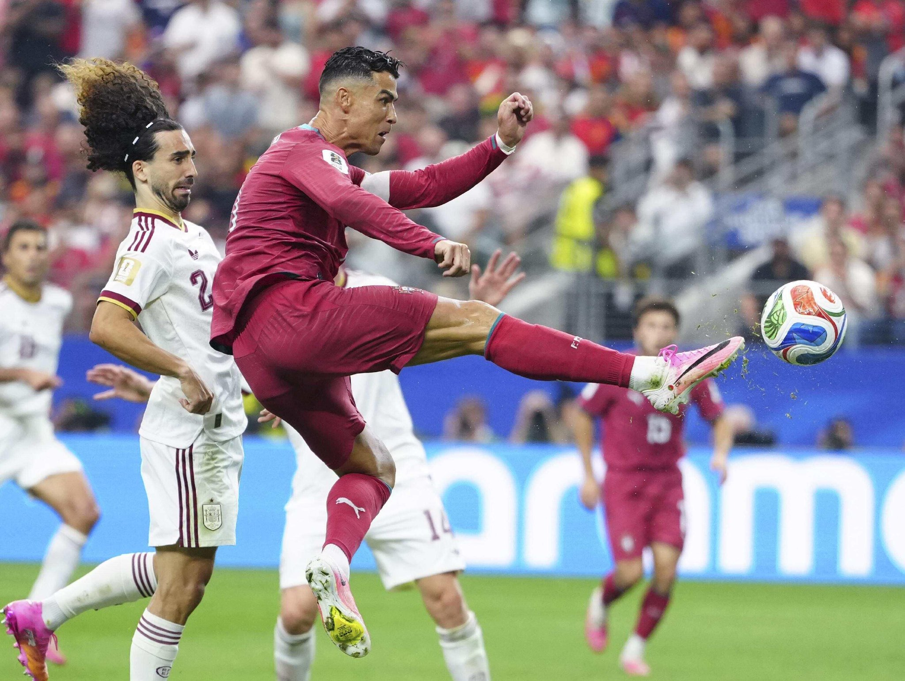
II. The Iberian derby: 120 minutes of suffocating deadlock
In the round of 16, the Iberian neighbours Portugal and Spain met at AT&T Stadium in Arlington. Billed as 'Mars hitting Earth', it turned into a suffocating war of attrition. The two sides fought out a midfield scrap with few chances. As the lone striker Ronaldo was closely marshalled by the Spanish defence; he barely got on the ball, and several attempts to break the line with his trademark bursts were snuffed out by the younger generation of Spanish defenders. In the second half Portugal's left-back Nuno Mendes went off injured; Martínez's changes could not break the deadlock — 0-0, and the match was dragged into its cruellest phase.
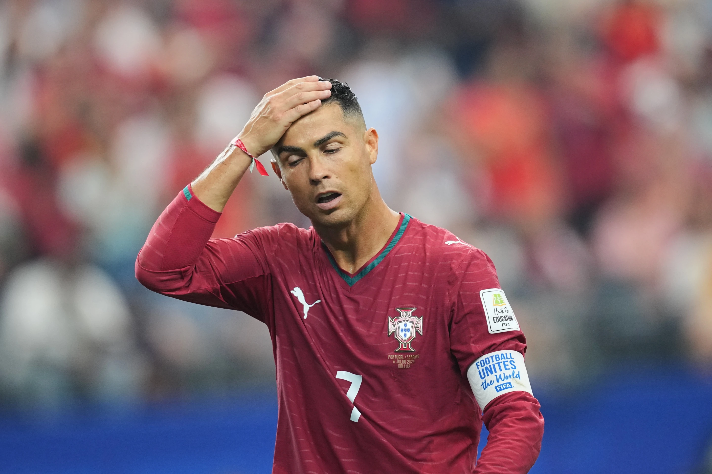
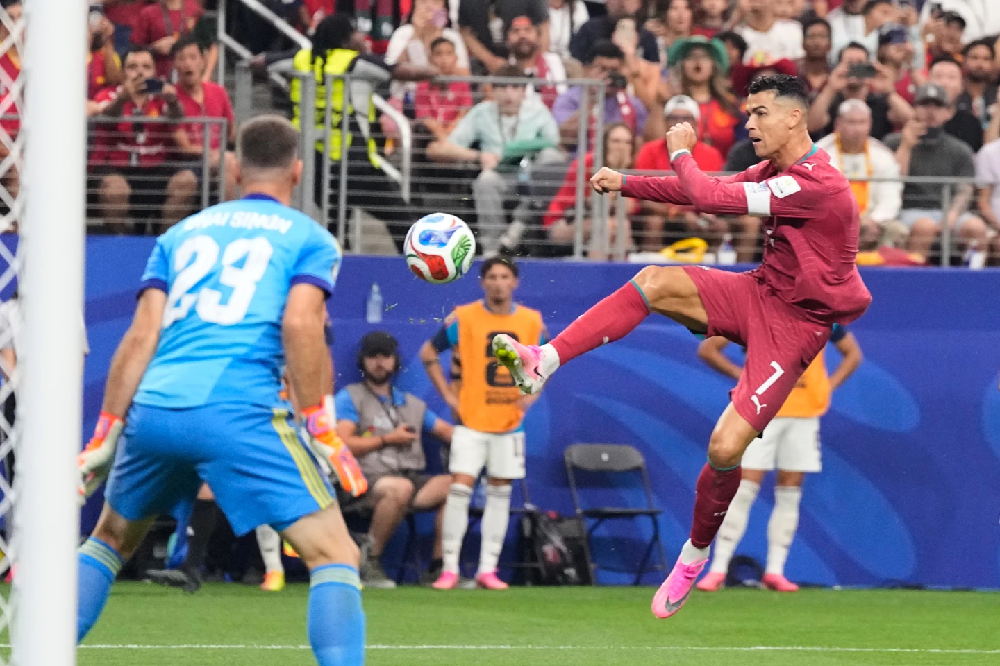
III. The 91st minute: the death sentence
Just as everyone expected extra time, Spanish midfielder Mikel Merino struck in the 91st minute to win it. Meeting a cross, he slotted home; the moment the ball hit the net, the Spanish end at AT&T Stadium erupted while the Portuguese side fell silent. 0-1. At the final whistle, the 41-year-old Ronaldo slowly walked toward the tunnel — the final 90 minutes (plus stoppage time) of his World Cup career, ending on a '0'. The irony: just one match earlier he had 'broken the duck' and the entire internet had hailed 'onward to the title'; this match saw a stoppage-time dagger, the Iberian neighbour personally sending the 'last dance' to the grave.
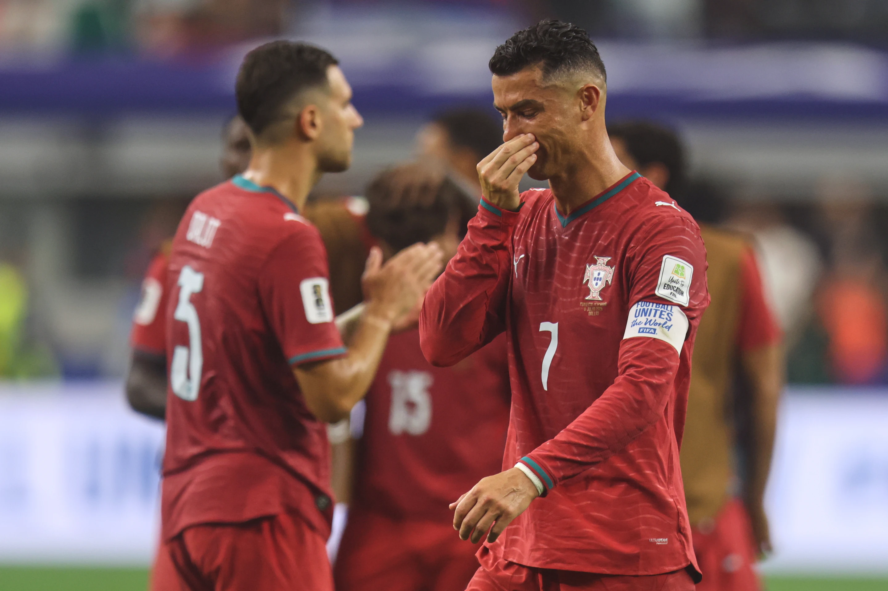
IV. Tears in the mixed zone: 'a clear conscience'
After the match Ronaldo wept openly in the mixed zone. Multiple outlets (ESPN, Al Jazeera, Titan Sports, Times of India) caught the moment — the superstar who always projects toughness, confidence, even arrogance, broke down at the World Cup's finish line. Through sobs he left the line destined to be quoted on repeat: 'I gave it my all, and I leave with a clear conscience.'
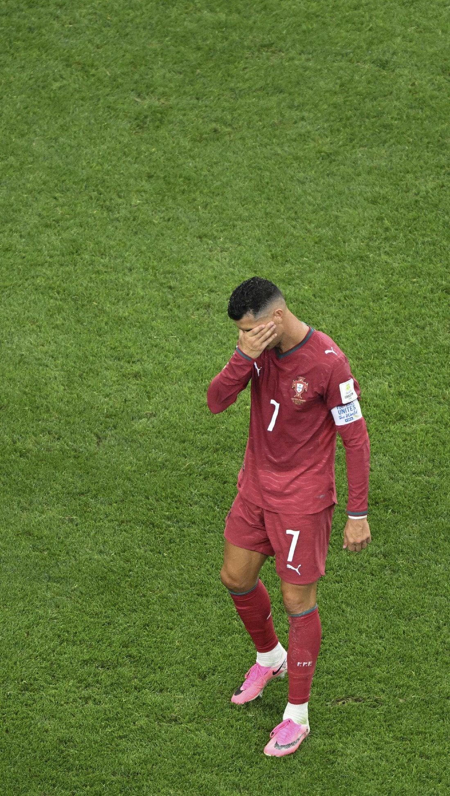
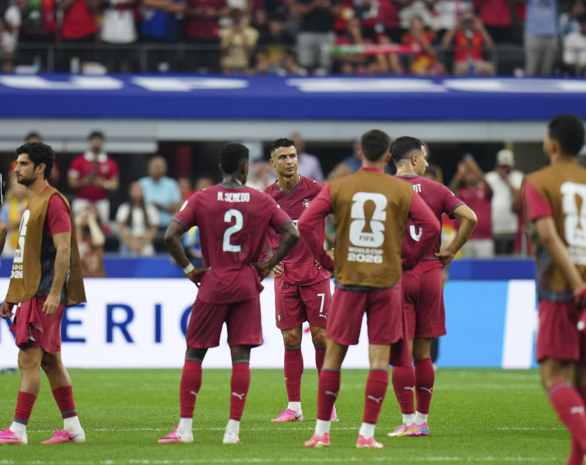
V. The 'clear conscience' preview and the closed-loop rhetoric
Most ironically, Ronaldo had already previewed the 'clear conscience' line the day before at the 7/6 press conference — then he had vowed: 'No matter what tomorrow, I'm 1000% at peace with my conscience. I scored 3 goals under pressure, my performance was not bad.' Sure enough, after the loss, the same line arrived on cue. This pre-match plant and post-match delivery closed-loop rhetoric was mocked by fans as 'winning the talking even when losing' — as if whatever the result, the script's lines were already written, just waiting to be recited when the camera rolled. Supporters call it 'champion mentality'; critics call it a shield that refuses reflection.
VI. The three-trophy shield and the 'saviour' narrative
Confronted with the zero-trophy charge across six World Cups, Ronaldo produced his customary shield: 'Before me, Portugal had never won anything; I helped Portugal win three trophies — the Euros are no less than the World Cup.' Supporters credit his historical contribution — Euro 2016, the 2019 Nations League, Ronaldo was a core contributor. But critics point out sharply: he went off injured early in the Euro 2016 final, and substitute Éder's long-range winner delivered the trophy; meanwhile, with zero yield across six World Cups he still insists on casting himself as the 'saviour', the 'uncrowned king' — this self-centring narrative is precisely the essence of his 'persona controversy'.
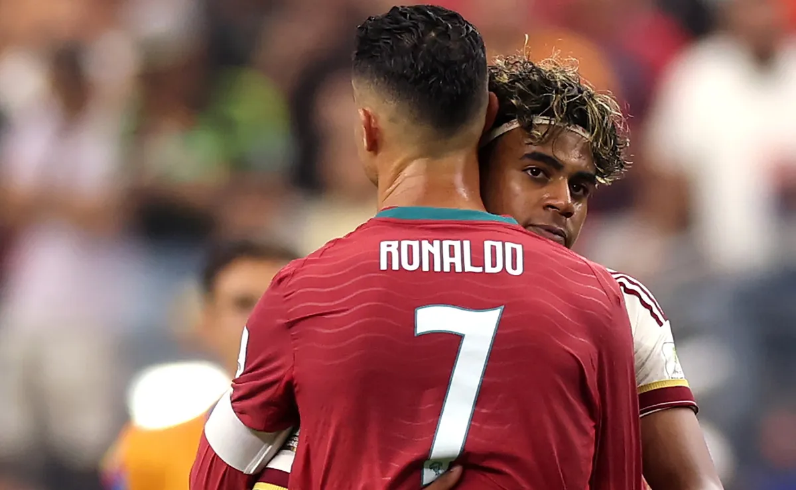
VII. Six World Cups' scorecard: a sheet full of zeros
Let's step back and look at the full picture of this 'path to deification':
· 2006 Germany: semi-finals (Rooney's 'wink-gate' sank a teammate; lost to France in the semis)
· 2010 South Africa: round of 16 (0-1 vs Spain; Ronaldo goalless against Spain)
· 2014 Brazil: group-stage exit (played injured; left the tragic image of 'I alone cannot carry it')
· 2018 Russia: round of 16 (no goals vs Uruguay; left the pitch in silence)
· 2022 Qatar: quarter-finals (0-1 vs Morocco; stormed straight down the tunnel in tears)
· 2026 US-Canada-Mexico: round of 16 (0-1 to a Spanish stoppage-time winner; wept in the mixed zone)
Six tournaments, nine knockout matches, one goal, zero trophies. Versus his contemporary Messi, who was crowned at Qatar 2022, the end of this 'GOAT' road is a scorecard full of zeros.
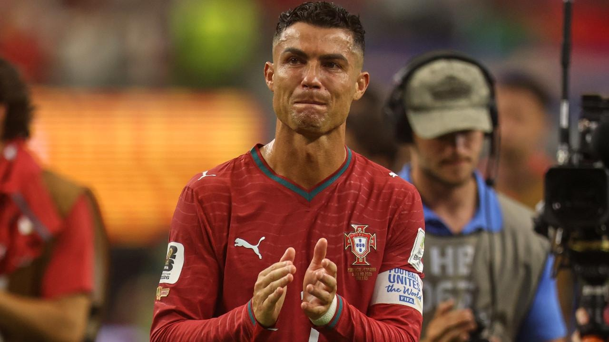
VIII. Worldwide carnival and 'Factos'-style comment-control
The moment the winner hit the net, social networks exploded. Spanish fans, Argentine fans and the 'CR7-hater' camp in the Chinese sphere celebrated — 'The King leaves without his crown', 'six editions zero trophies', 'clear-conscience.jpg' and other memes flooded the timeline; LiveMint even used 'The King leaves without his crown' as its headline, a prophecy that came true. Meanwhile Ronaldo's die-hard fans staged the familiar 'Factos'-style comment-control in the replies: attacking the media for 'not understanding football', attacking Spain for 'riding luck', attacking all sceptics as 'haters' and 'jealous' — the same fan-cult operation of 'lost the match, won the comment section' as when he spammed 'Factos! Factos! Factos!' under Messi's post after losing the 2021 Ballon d'Or. The result is decided, but the public-opinion battlefield will never fall silent.
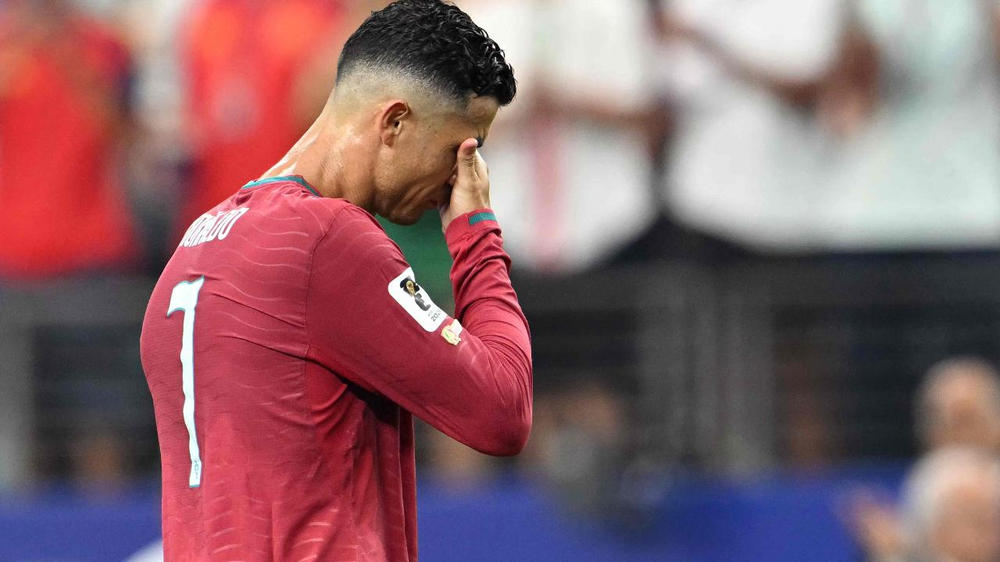
IX. Archive verdict: deification or burial?
As a 'dark-history archive', we must admit: Cristiano Ronaldo is one of the greatest players in football history — five Ballons d'Or, five Champions Leagues, a European Championship, countless scoring records — these achievements are undeniable. But 'greatness' and 'perfection' are two different things. A truly great player can calmly accept his limitations and failures; a player hijacked by his own myth must, after every failure, patch the forever-perfect mirror with 'clear conscience', 'I did my best', 'they don't understand'. Six World Cups with zero trophies is not in itself shameful — what is shameful is that after every exit, the protagonist of the narrative can only ever be himself. That is the true footnote of the 'dark history': not losing the match, but being unable to lose.
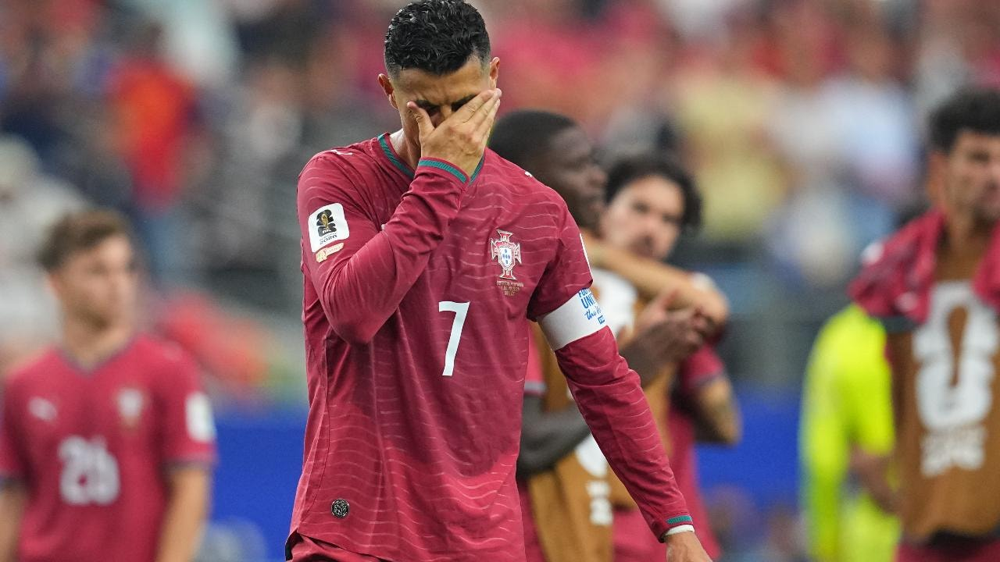